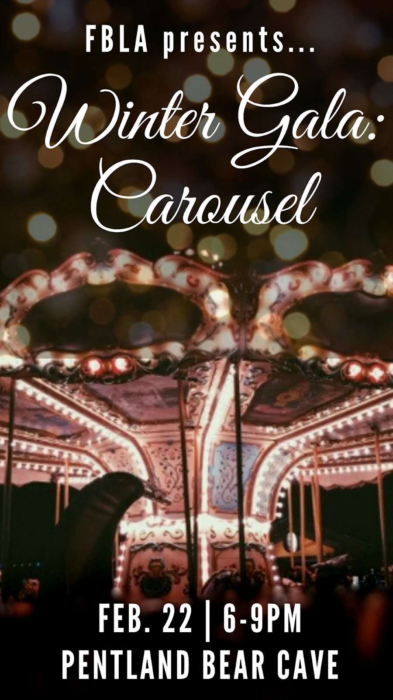
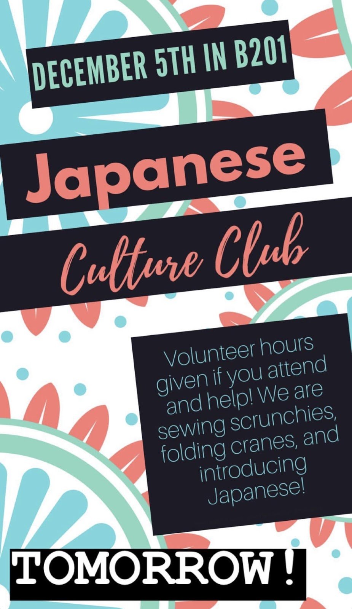
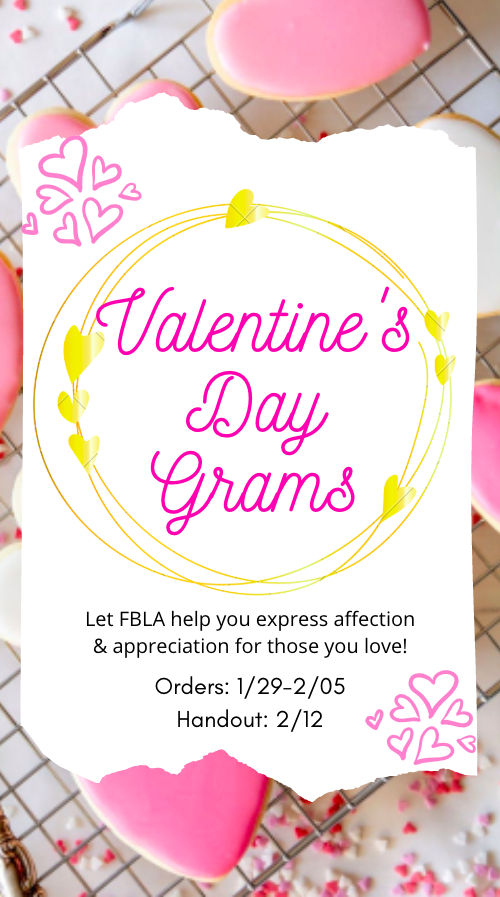
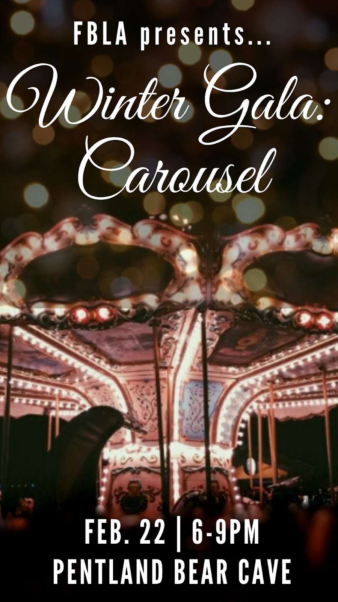
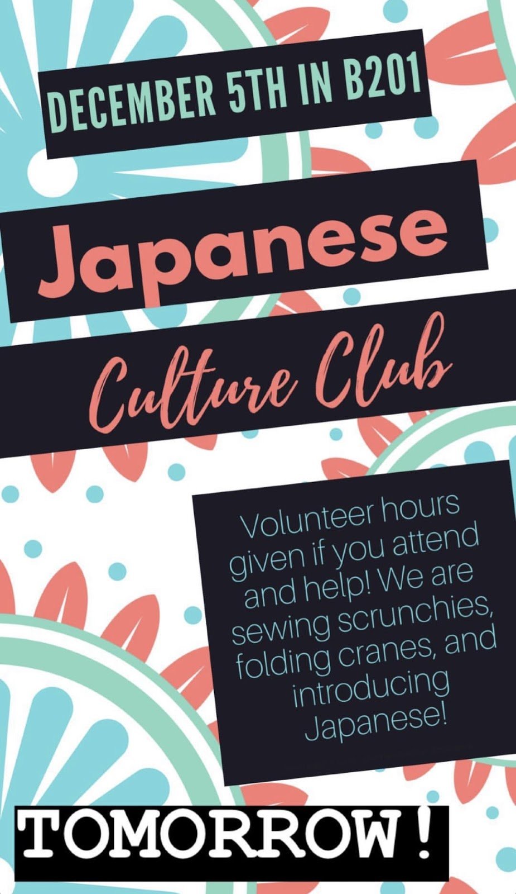
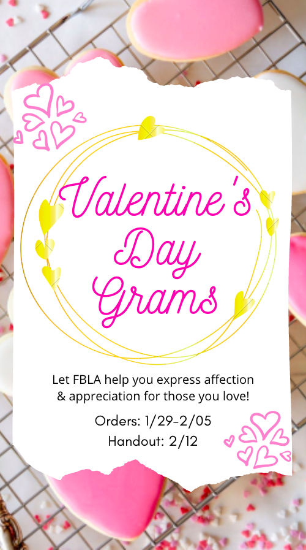

Azure Otani
Hi! Thank you in advance for taking a look at my website! I really appreciate it. Feel free to let me know if you have any questions, by contacting me through the email listed. My name is Azure Otani. My legal name is Azua, but I go by Azure because it is waht my name was originally supposed to be. Because I was born in a different country, my first name has a slight variation in legal forms. I'm originally from Kobe, Japan, but I grew up mostly in Irvine, CA. In addition, I have also lived in Tuckahoe, NY. I am fluent in both English and Japanese, because I grew up in the United States, but I was raised in a Japanese home. I have been attending various amounts of Japanese school since I moved to the U.S. which has helped me to maintain my skills. I have several test results such as the TOEFL (109/120), EIKEN (Level 1), AP Japanese (5), and SAT Subject Japanese (800) as proof of my fluency. I can comfortably communicate, write, and read in both languages. I can also translate and go back and forth between the two of them.
I am currently a 1st year at the University of California, Riverside. I hope to graduate in 3-3.5 years. After my undergrad, I plan on getting my masters.I am currently undecided about what emphasis I am interested in, but I'm looking at Marketing. I'm currently enrolled and taking Intro to Computing Sciences, Microeconomics, Calculus for Business, and other classes that will lead me to the success of my future business. My dream job is to be the owner of a rockclimbing gym. I want to partner with somebody and create a strong climbing gym somewhere on the border of the Inland Empire and Orange County. My childhood dream was to become a math teacher, so I hope to return back to school to obtain my credential and masters in education. I think it's important to be able to fulfill both your childhood and adult dream jobs.
I am currently involved in my school's FBLA-PBL organization (Future Business Leaders of America-Phi Beta Lambda) as a general member and also a member of the marketing committee. In our committee, we learn skills such as creating flyers based on marketing forms created by other people, communicating and collaborating with many people, working on a clear vision, and hard skills such as Adobe. Within the club, as a general member, I obtain skills such as interview skills, branding yourself, public speaking, and other professional skills. However, the club's focus is also on personal growth, so we learn to be more open and connected to those around us. We learn partnership, integrity, and the importance of understanding compromise. This club is a really big time commitment for me, because we have two meetings a week, in addition to the genral meeting every week. I am also taking 19 school units which can get really full, but I have really good time managing skills.
Experience
Staff
• Challenge Course Staff: Working with people of all ages and backgrounds to strengthen their group teamwork skills, while helping them face their fear of heights. Understanding the weight of my responsibility and reliability.
• Indoor Rockwall Staff: Catering to each person’s needs in terms of how comfortable they feel with the idea of climbing
Staff
•Youth Program Coach: Coached children between the ages 6 and 16 using leadership skills, while gaining teamwork skills while working with the rest of the coaches
•Sender City: Encouraged children and communicated with parents in order for kids to have a fun time at the kid-friendly rock climbing wall at the facility
•Front Desk Staff: Tended to customers and was the face of the gym. Learned fast-paced, quick problem-solving skills, whilst executing the task at hand well
Marketing Committee
• Designing and creating flyers (with Canva and Adobe) to post to social media (such as Instagram, Facebook, and Youtube), taking and editing photographs and film for promotional use, and work with the other subcommittee
Education
University of California, Riverside
Woodbridge Highschool
Portfolio





 
